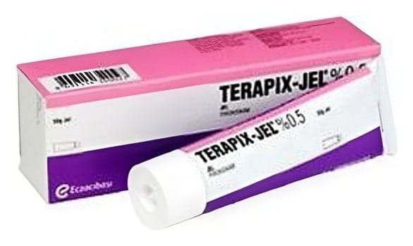

Terapix % 0,5 Jel, 50 g

Ne için kullanılır
KT · Bölüm 1TERAPİX berrak, açık sarı renkte bir jeldir. Haricen kullanılır. Jelin her gramı 5 mg piroksikam isminde etkin madde içerir. TERAPİX 50 g’lık tüplerde sunulur. TERAPİX’in etkin maddesi piroksikamdır, non-steroid antiinflamatuvar (NSAİ) ilaç gurubuna dahildir. TERAPİX etkilenen kas ve eklem üzerindeki cilde sürüldüğünde, eklemlerdeki ve kaslardaki şişliği azaltmaya ve ağrıyı kesmeye yardımcı olur. TERAPİX, romatizma, burkulma, incinme ve eklemde (diz, bilek, ayak bileği vs) hafif (osteoartrit) kireçlenme tedavisinde kullanılır.